Advertorial
A 'Facelift' With No Swelling, Surgery Or Downtime - Even Her Doctor Was Stunned!
Posted By Linda William
• • 3 Min Read
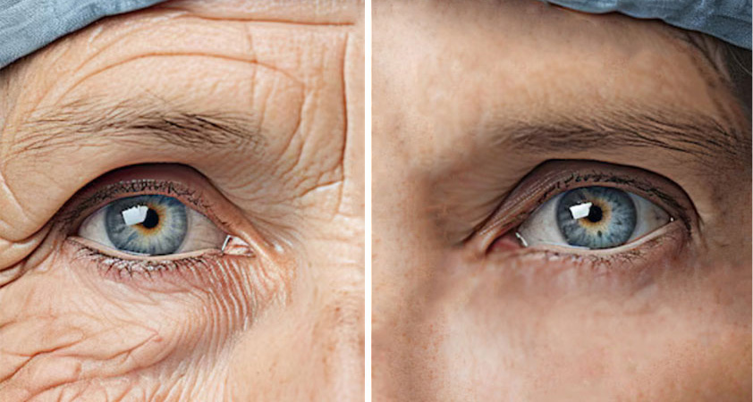
More than 20X the strength of medical wrinkle creams, experts warn it should be prescription only - but it's still available in the USA (for now!)
Dermatologists and plastic surgeons are scoffing at a controversial new “facelift” alternative that eases the need for invasisive procedures and has women canceling their botox appointments in droves.
Dr. Ryan Shelton says his latest discovery, the massively popular Repair & Release Cream by South Beach Skin Lab is like a facelift in a jar without going under the knife - phew!
Having sold out 12 times in the last year at Target, Amazon, and Walmart, this face lift cream is replacing painful procedrues and expensive dermatologist visits - if you can get your hands on it.
As Featured In
5 Reasons Why Women Over 50 Love This “Facelift In A Jar”
1. It’s Better Than Botox, Fillers or A Facelift!
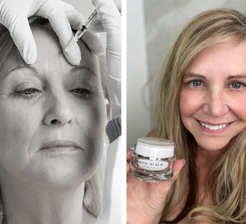
You can spend thousands of your hard-earned dollars going under the knife - but with less risk and a lower price, you can get the same results in just 2 minutes a day from home! The Repair & Release Cream is formulated to lift, firm, and tighten your skin without the pain, recovery, or price tag of surgery and injectables!
2. It’s Still Available Without A Prescription
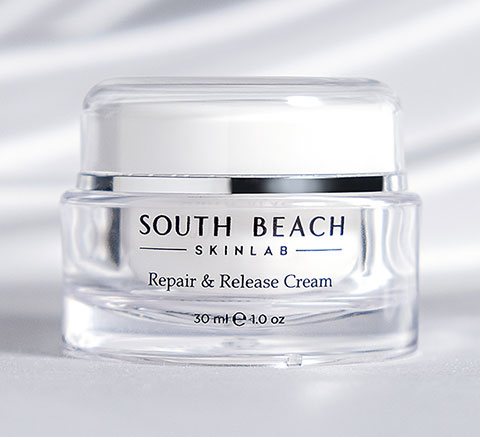
The best products for anti-aging often require a medical consultation or a prescription - but for now, the Repair & Release Cream is still available to anyone in the USA. With its viral success, demand for this product has only grown - outpacing rival products from Sephora and department stores alike.
3. It’s Made For
YOUR Skin
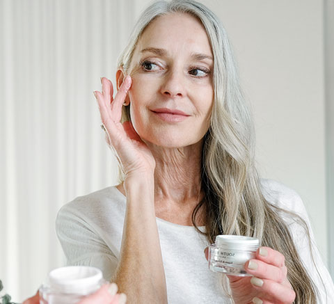
Specially formulated for all mature skin types - it’s going to make a dramatic difference in lifting and firming your skin. It works by boosting the production of collagen and elastin, repairing damage and keeping skin vibrant, regardless if you’re a dry, oily, or combination skin type.
4. It Solves All Your
Biggest Problems
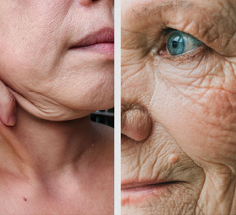
From wrinkles to sagging skin, the Repair & Release Cream erases visible signs of aging with the most powerful and effective ingredients available. When used regularly for 4 weeks, it will take at least 10 years off your look and appearance.
5. You’ll Notice A
Difference Quickly!
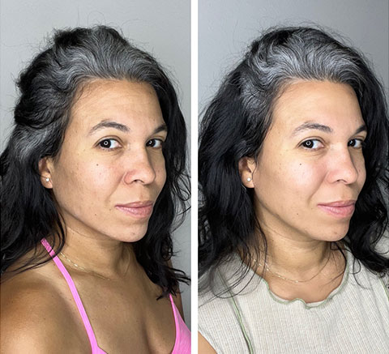
In a matter of days, the improvement in your skin will be highly noticeable - increasing confidence and compliments throughout your day! Looking great isn’t about vanity, it's about loving yourself enough to put your best face forward - and this formulation has been proven to do just that!
Why Can’t They Keep Repair & Release Cream In Stock?
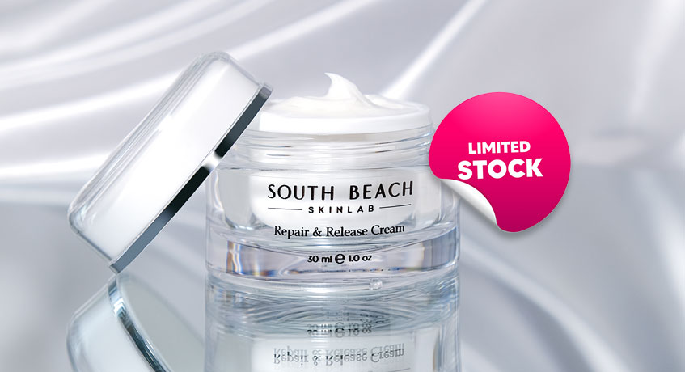
Formulated by top skincare doctor, Dr. Ryan Shelton. This facelift cream is now one of the hotter viral skincare items to get your hands on in 2024.
Thanks to rave reivews from magazines, customers, and fellow doctors. It has gained a massive following for its clinical strength peptides like Argireline, and Matrixyl Synthe’6, which have been proven to reduce wrinkles and firm sagging skin by up to 80%.
“My high-profile clients didn’t have enough time out of the public eye for recovery, so I needed something that could provide extreme improvements without any downtime,”
says Dr. Shelton.
The peptides in the Repair & Release Cream aren’t your average drugstore ingredients…
While Argireline and Matrixyl Synthe ‘6 are powerful on their own. Dr. Ryan didn’t stop there, adding one of the most powerful peptides on the planet called "Snap-8" into the formulation.
This peptide absorbs deep into the layers of skin, signaling to your body to produce more collagen, aka the “Youth Protein”.
This creates an extreme lifting effect, stopping the formation of new wrinkles almost immediately and giving the face-lift like results the cream has been so well known for.
So Does The "Face Lift In A Jar" Really Live Up To The Hype?
Customers across America have sent in pictures of their incredible results, and they’re feeling just as good on the inside as they look on the outside!
Results like these are being shared by hundreds of women from all over the country, and many of them are from using the product for just days!
The mix of peptides in the Repair & Release Cream isn’t just transforming skin - it’s giving much-needed confidence back to deserving women who want to look as young as they feel!
Julie Garcia, a customer from Los Angeles, is one of many to reach out and share her story of skin transformation and what kind of impact it had on her daily life.
Putting it to the test (oh girl, was she surprised)
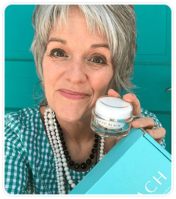
I’ve struggled with wrinkles since I was in my early 30’s and they just seemed to get worse with every passing year...
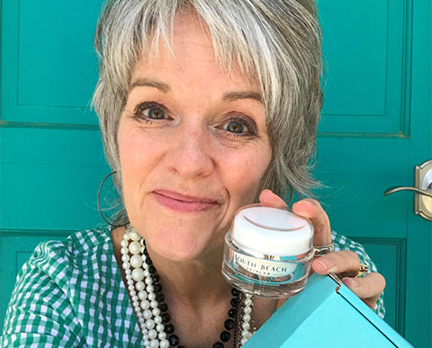
After raising four children, and spending decades as a special needs teacher...
The exhaustion of everyday life was showing up worse on my face than ever before!
I was looking into botox, filler, and even facelift consultations but with the INSANE costs, I had more questions than confidence...
That’s when a friend told me about the Repair & Release Cream…
A quick search one night led me to hundreds of positive reviews...
And for less than the cost of a nice dinner out, I would be CRAZY not to try it before attempting something more serious like surgery.
I had been duped by at least a dozen other skin creams that didn’t work, spending months of my salary only to be disappointed.
Needless to say, I was skeptical about seeing any real improvement.
But I took the leap of faith and ordered it anyway... It only took a couple days to arrive and I couldn't wait to try it
I enjoyed how it made my skin feel - but I hadn’t noticed much difference in sagging and lines in the first few days...
It wasn’t until day 5 that I noticed my skin having a more lifted look. Dare I say, plump?
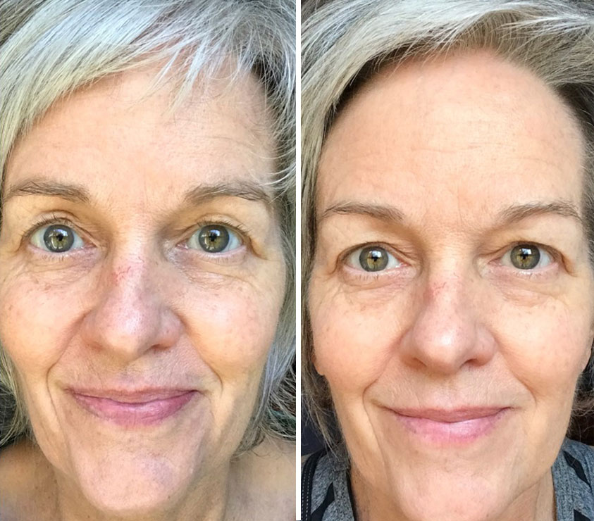
At first, I thought I was going crazy - how could something work this well this fast?
But that following Sunday at church I couldn’t take 3 steps without a compliment from friends and neighbors telling me how glowing and youthful my skin looked.
This might sound silly, but those compliments did as much for me as the Repair & Release Cream did. I haven’t walked with my head held that high in a long time...
It’s been six months since then, and I haven’t skipped a single day without my Repair & Release Cream.
Of course, I LOVE how my skin looks, and I’m very thankful that I don’t have to consider something as painful or expensive as a facelift.
But the biggest change for me would be how I see myself.
I’ve never been happier with my complexion and I feel more beautiful and confident than it did when I was 30. My only complaint is that it keeps selling out!
So, Where Can You Get It?
Getting your hands on the Repair & Release Cream won’t be easy - but it will be worth it!
Because of the quality of peptides, this facelift cream is produced in limited quantities to guarantee maximum effectiveness. Sadly, producing a new batch could take months, if not longer.
As of this week, Dr. Ryan Shelton has just restocked the website with a special offer but who knows how long it will last before selling out again.
Special Offer
Buy 2 + Get 1 Free
While we cannot guarantee that the Repair & Release Cream is still in stock at the time you’re reading this, the last time we checked Dr. Ryan had a special offer to buy 2 and get 1 free!
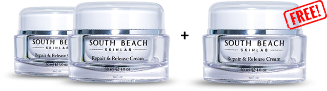
Check Availability &Claim Discount
This discount was given to us straight from Dr. Shelton himself as a mission to get this facelift cream into the hands of as many women as possible! Just, click the button below to check availability and claim your discount.
Money Back Guarantee
All South Beach Skin Lab products come with a 100% money back guarantee for a full 30 days. We are so confident you will love the results we want you to try them risk free. If you are not completely satisfied for any reason, simply return the product for a prompt and full refund!
How Much Longer Will You Prevent Yourself From Living Your Best Life?
- You deserve to have beautiful, supple skin like you did when you were young
- You deserve to age gracefully, better than your friends, family, and neighbors
- You deserve to feel confident when you walk out of the house every single day
Do you really want to spend another day waking up and not loving what you see in the mirror?
Don’t you deserve compliments and confidence for all the work you're putting into yourself?
If you’re ready to take the first step, we’re confident the Repair & Release Cream will transform how you feel about your skin.
If you’re wondering how the Repair & Release Cream can help you, here’s a timeline of results from one of our customer so you know what to expect:
Real Results From A Repair & Release Cream Customer
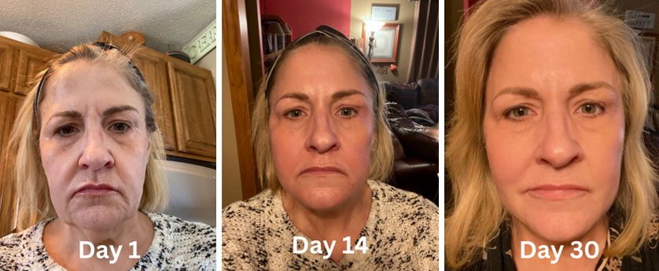
30 day results submitted from a real customer
-
1
DayDay 1: Expect your skin to experience immediate hydration by incorporating this powerful cream into your routine twice daily. This will allow for the combination of Peptide X and Peptide Y to work its magic on your damaged skin from the very start.
-
14
DayDay 14: By now, wrinkles have softened thanks to the peptides altering the molecular makeup of your skin. Turning back the clock, it increases collagen and elastin to that of your early 20’s allowing your skin to follow suit.
-
30
DayDay 30: Your collagen and elastin production should be up close to 200% at this point allowing for skin to look and feel more rejuvenated. The peptides are in the final phases of damage repair leaving nothing but a youthful complexion.
These peptides can't be purchased in department stores or Sephora, and right now the only place to get Dr. Shelton's formulation is directly from him - or at least from his website while supplies last.
The Repair & Release Cream will provide you with real results you’ll be able to notice after only a few days - with maximum improvements after 30 days.
Plus, with a money-back guarantee you’ve got absolutely nothing to lose and everything to gain by ordering this product (while you can!)
Check Availability &Claim Discount
What People Like You Are Saying
Don’t let yourself be the last person to try this life-changing cream and watch the magic of the peptide blend change your skin for good!
Here’s what women are saying about the Repair & Release Cream
D
Doris L. Verified Buyer
“Have been looking for a good face regime that wouldn’t break the bank and came across South Beach brand. Figured it was worth a try so I ordered Repair & Release Cream. After one month I have noticed a big improvement in the appearance of wrinkles all over and a more youthful feel to my skin. Really like the results and the price!”
K
Kathleen S. Verified Buyer
“South Beach Repair and Release cream is an outstanding product. I have been using it in the evening and every morning, adding a bit of my liquid makeup for a very smooth and healthy appearance.”
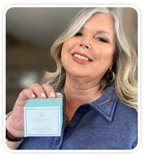
M
Michele V. Verified Buyer
“This Repair and Release cream is incredible....gives my older skin softness, and richness! Love it! Introduced my daughter to it recently.....she loves it also!”
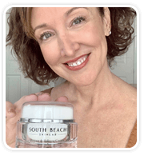
F
Faye W. Verified Buyer
“Wow, I LOVE this South Beach Repair and Release Cream! I have used many brands over my 75 years of life living in the Panhandle of Florida. This wonderful creme has actually softened and improved the appearance of the fine lines and creases - especially around my eyes, lips and neck. And it worked so quickly!! I love it!!”
N
Nancy A. Verified Buyer
“I’m on my second jar of Repair and Release Cream now. I love the ease of blending it in and the way it makes my skin feel! I’m 68 going on 69 in two weeks(ugh) and can definitely notice a change in the skin around my eyes as well as my mouth and neck. I put it on every morning after my shower and every night after I wash up. The wrinkles that have been really bothering me lately are much less obvious and my husband has noticed also, without me asking, lol which says a lot! I’ll be a lifetime user for sure!”
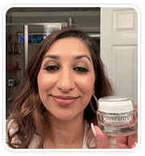
V
Virginia J. Verified Buyer
“I am now on my third jar of Repair and Release Cream and absolutely love it. I was so unhappy over how fast my skin is aging now. I’ll be 75 in June and could not be more pleased! My skin is glowing, very few wrinkles and lines and so very soft. I’ll never stop using it and have given my daughter a jar and she loves it. She has very sensitive skin but has no problems with Repair and Release! We both have olive complexions!”
H
Hazel L. Verified Buyer
“My skin has tightened up. The bags under my eyes are much less prominent and my sagging neck has gotten so much firmer. Overall I am very satisfied with my 90 year old skin. You have a wonderful product that works amazing!
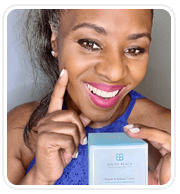
Claim Discount